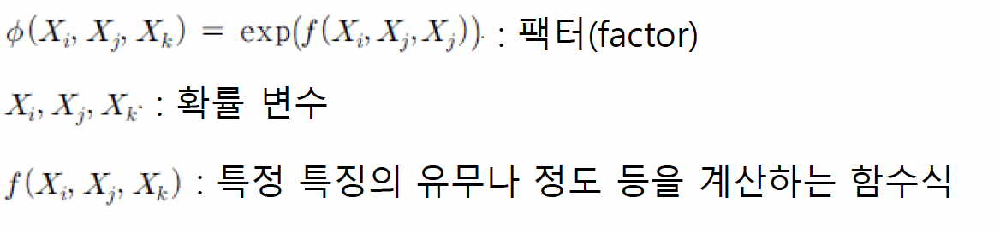

20221110
확률 그래프 모델
연속인 확률변수가 포함된 확률 분포
table을 사용한 표현 곤란
함수식을 이용한 표현
- 베이지안 망 - 조건부 확률 값 출력 함수 사용
- 마르코프 랜덤 필드 - 지수함수와 같은 함수식 사용

조건부 랜덤 필드 (conditional random field, CRF)
조건부 확률분포를 표현하는 마르코프 랜덤 필드
X - 관측되는 대상이나 입력을 나타내는 확률변수들의 집합
Y - 추정하거나 예측하는 대상을 나타내는 확률변수들의 집합
\(\{\phi_1(D_1), \phi_2(D_2), ..., \phi_n(D_n)\}\): Y의 확률변수를 하나라도 포함한 팩터의 집합

로그-선형 모델 (log-linear model)
팩터가 지수함수로 표현되는 마르코프 랜덤 필드 모델
- \(X = \{X_1, X_2, ..., X_n\}\): 확률변수의 집합
팩터의 형태
\[ \phi_i = exp(-w_i f_i (D_i)) \]
확률 분포의 표현
\[ P(X_1, X_2, ..., X_n) = \frac{1}{Z}exp[-\sum_{i = 1}^{K}{w_i f_i (D_i)}] \]
규칙 기반 시스템 (rule-based system)
지식을 규칙의 형태로 표현
주어진 문제 상황에 적용될 수 있는 규칙들을 사용하여 문제에 대한 해를 찾도록 하는 지식 기반 시스템 (knowledge-based system)
전문가 시스템 (expert system)을 구현하는 전형적인 형태
- 특정 문제영역에 대해서 전문가 수준의 해를 찾아주는 시스템
추론
구축된 지식과 주어진 데이터나 정보를 이용하여 새로운 사실을 생성하는 것
전향추론 (forward chaining, 순방향 추론)
규칙의 조건부와 만족하는 사실이 있을 때 규칙의 결론부를 실행하거나 처리
후향추론 (backward chaining, 역방향 추론)
어떤 사실을 검증하거나 확인하고 싶은 경우에 관심 대상 사실을 결론부에 가지고 있는 규칙을 찾아서 조건부의 조건들이 모두 만족하는지 확인
전향 추론의 예

후향 추론의 예

규칙 기반 시스템 구조
지식
- 규칙과 사실로 기술
- 규칙 (rule) - 문제 해결을 위한 지식
- 사실 (fact) - 문제 영역에 대해 알려진 데이터나 정보

규칙 베이스 (rule base)
전체 규칙의 집합을 관리하는 부분
생성 메모리 (production memory)라고도 함
작업 메모리 (working memory)
사용자로부터 받은 문제에 대한 정보를 관리
추론 과정의 중간 결과를 저장하고, 유도된 최종해 저장
작업 메모리에 저장되는 모든 것을 사실이라 함
추론 엔진 (inference engine)
실행할 수 있는 규칙을 찾아서, 해당 규칙을 실행하는 역할
패턴 매칭 - 경합 해소 - 규칙 실행의 과정 반복

pattern matching (패턴 매칭)
작업 메모리의 사실과 규칙베이스에 있는 규칙의 조건부를 대조하여 일치하는 규칙을 찾는 과정
conflict set (경합 집합)
규칙들의 집합, 실행 가능한 규칙들의 집합
conflict resolution (경합 해소)
경합 집합에서 하나의 규칙을 선택
user interface (사용자 인터페이스)
규칙베이스 및 작업 메모리 관리 및 추론 엔진 조작
external interface (외부 인터페이스)
외부 데이터나 함수의 기능 사용 지원
경합 해소 전략
규칙 우선순위 (rule priority)
- 미리 각 규칙에 우선순위 부여
- 경합 집합에서 우선수위가 가장 높은 규칙선택
최신 우선 (recency, depth)
- 가장 최근에 입력된 데이터와 매칭된 규칙 선택
최초 우선 (first match, breath)
- 경합 집합에서 가장 먼저 매칭된 규칙 선택
상세 우선 (specificity)
- 가장 상세한 조건부를 갖는 규칙 선택
- 규칙의 조건부가 가장 복잡하게 기술된 것 선택


지식 표현
개발 도구에 따라 고유한 형식 사용
사실 (fact)
객체 (object)나 프레임 (frame)처럼 여러 개의 속성 포함 가능


규칙 기반 시스템 개발 도구
규칙 기반 시스템의 기본 컴포넌트들을 미리 제공하여 규칙 기반 시스템을 쉽게 구현할 수 있게 하는 소프트웨어
문제 영역의 지식을 잘 획득하여 정해진 형태로 표현만 하면 규칙 기반 시스템을 비교적 쉽게 구현 가능
Jess, CLIPS, EXSYS, JEOPS 등
심볼 그라운딩 문제와 프레임 문제

기호의 표기와 의미가 자의적인 관계
기호를 이해하는 문화 체계 속에서 필연화
symbol grounding
기호 표기를 실제 세계의 의미와 연결시키는것
기호 표기로 표현되어 있는 지식에 대해서, 컴퓨터는 심볼 그라운딩을 할 수 있는 능력이 없음
실제 세계와 컴퓨터의 기호 표기 사이의 심볼 그라운딩을 인간이 대신 수행
기호 표기를 실제 세계의 의미와 직접 연결시킬 수 없다는 것
딥러닝 기술 발전은 심볼 그라운딩 문제 해결에 기여 예상
프레임 (frame) 문제
사고범위 문제
어떤 작업을 수행할 때 관계있는 지식만 꺼내서 사용한다는 것은 지극히 자연스럽고 당연하지만, 인공지능에서는 이러한 일이 쉽지 않다는 것

CYC 프로젝트
상식의 필요성
- 추론 등을 위해 상식의 활용 중요

상식적인 추론을 하는데 필요한 방대한 지식을 추출하여 표현하는 프로젝트
일차 술어 논리를 사용해 지식 표현
1984 르냇 (Douglas Lenat) 시작